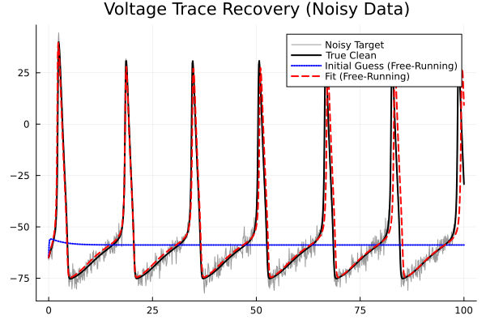
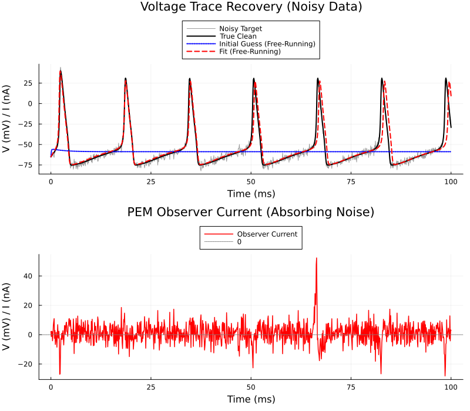

15. Parameter Estimation with Noisy Data
Introduction
In this example, we demonstrate the filtering power of the Prediction Error Method (PEM). We generate data from a true Hodgkin-Huxley neuron, add realistic Gaussian noise to the voltage trace, and then attempt to recover the conductances. The PEM observer channel acts as a feedback controller, absorbing the noise while allowing the optimizer to find the true underlying parameters without overfitting the noise.
using MTKNeuralToolkit
using SymbolicIndexingInterface: getu
using MTKNeuralToolkit.HodgkinHuxley: SodiumChannel, PotassiumChannel, LeakChannel
using ModelingToolkit: mtkcompile, @named
using OrdinaryDiffEq
using OrdinaryDiffEqRosenbrock
using Optimization
using OptimizationOptimJL
using SciMLStructures: Tunable, canonicalize, replace
using SymbolicIndexingInterface: parameter_values, setp
using PreallocationTools
using DataInterpolations
using SciMLBase
using Plots
using Markdown
using Random1. Build the True System & Generate Noisy Data
top = Scalar()
function build_hh_neuron(name::Symbol; gNa=120.0, gK=36.0, gleak=0.3, pem=false, itps=nothing, K=1.0)
@named cap = Capacitor(topology=top, C=1.0)
@named na = SodiumChannel(topology=top, g=gNa)
@named k = PotassiumChannel(topology=top, g=gK)
@named leak = LeakChannel(topology=top, g=gleak)
channels = [na, k, leak]
if pem
@named pem_ch = PEMObservationChannel(itps=itps, K_init=K, topology=top)
push!(channels, pem_ch)
end
return build_compartment(cap, channels; name=name, V_init=-65.0, topology=top)
end
true_gNa = 120.0
true_gK = 36.0
true_gleak = 0.3
true_neuron = build_hh_neuron(:true_neuron; gNa=true_gNa, gK=true_gK, gleak=true_gleak)
drivers = [(1, 8.0)]
true_net = build_acausal_network([true_neuron]; drivers=drivers, name=:true_net)
END_TIME= 100.0
true_sys = mtkcompile(true_net.sys)
true_prob = ODEProblem(true_sys, [], (0.0, END_TIME))
timesteps = 0.0:0.1:END_TIME
true_sol = solve(true_prob, Rodas5(); saveat=timesteps)
V_data_clean = true_sol[true_sys.true_neuron.cap.v]1001-element Vector{Float64}:
-65.0
-64.22591619267945
-63.49089980908907
-62.78551666686095
-62.10164954963334
-61.43161497634571
-60.76761061302958
-60.101273291048805
-59.42325708251769
-58.72254444914414
⋮
10.031725507100486
4.687598428801583
-0.574377907635427
-5.700204926115931
-10.665492866753324
-15.468675712768404
-20.12347941188003
-24.658477531706822
-29.127817545964085Add 3 mV Gaussian noise to the data
Random.seed!(42)
noise_level = 3.0
V_data_noisy = V_data_clean .+ noise_level .* randn(length(V_data_clean))
itp_V = LinearInterpolation(V_data_noisy, timesteps)LinearInterpolation with 1001 points
┌───────┬──────────┐
│ t │ u │
├───────┼──────────┤
│ 0.0 │ -66.0901 │
│ 0.1 │ -63.4707 │
│ 0.2 │ -64.4359 │
│ 0.3 │ -63.7193 │
│ 0.4 │ -59.6527 │
│ 0.5 │ -60.0014 │
│ 0.6 │ -63.3463 │
│ 0.7 │ -64.5091 │
│ ⋮ │ ⋮ │
│ 99.3 │ 3.27497 │
│ 99.4 │ -1.30911 │
│ 99.5 │ -4.74927 │
│ 99.6 │ -8.18907 │
│ 99.7 │ -21.2467 │
│ 99.8 │ -17.1929 │
│ 99.9 │ -25.3975 │
│ 100.0 │ -29.7477 │
└───────┴──────────┘
985 rows omitted
2. Setup the PEM Optimization Problem
We create a model neuron with terrible initial guesses and attach a PEM observer to the noisy data.
guess_gNa = 10.0
guess_gK = 100.0
guess_gleak = 10.3
fit_neuron = build_hh_neuron(:fit_neuron; gNa=guess_gNa, gK=guess_gK, gleak=guess_gleak, pem=true, itps=[itp_V], K=2.0)
fit_net = build_acausal_network([fit_neuron]; drivers=drivers, name=:fit_net)
fit_sys = mtkcompile(fit_net.sys)
fit_prob = ODEProblem(fit_sys, [], (0.0, END_TIME))
gNa_sym = fit_sys.fit_neuron.na.g
gK_sym = fit_sys.fit_neuron.k.g
gleak_sym = fit_sys.fit_neuron.leak.g
setter = setp(fit_prob, [gNa_sym, gK_sym, gleak_sym])
diffcache = DiffCache(copy(canonicalize(Tunable(), parameter_values(fit_prob))[1]))
v_getter = getu(fit_prob, fit_sys.fit_neuron.cap.v)
i_pem_getter = getu(fit_prob, fit_sys.fit_neuron.pem_ch.i)SymbolicIndexingInterface.TimeDependentObservedFunction{SymbolicIndexingInterface.ContinuousTimeseries, ModelingToolkitBase.GeneratedFunctionWrapper{(2, 3, true), RuntimeGeneratedFunctions.RuntimeGeneratedFunction{(:__mtk_arg_1, :___mtkparameters___, :__argₛᵧₘ1249670312406203976), ModelingToolkitBase.var"#_RGF_ModTag", ModelingToolkitBase.var"#_RGF_ModTag", (0x3a1ff8b4, 0x5bf883a1, 0x03411996, 0xa2b92212, 0x222202de), Nothing}, RuntimeGeneratedFunctions.RuntimeGeneratedFunction{(:x1, :x2, :x3, :x4), ModelingToolkitBase.var"#_RGF_ModTag", ModelingToolkitBase.var"#_RGF_ModTag", (0xb896e553, 0xa118fcf5, 0xbfeb9719, 0xa096e58a, 0x357542a4), Nothing}}, true}(SymbolicIndexingInterface.ContinuousTimeseries(), ModelingToolkitBase.GeneratedFunctionWrapper{(2, 3, true), RuntimeGeneratedFunctions.RuntimeGeneratedFunction{(:__mtk_arg_1, :___mtkparameters___, :__argₛᵧₘ1249670312406203976), ModelingToolkitBase.var"#_RGF_ModTag", ModelingToolkitBase.var"#_RGF_ModTag", (0x3a1ff8b4, 0x5bf883a1, 0x03411996, 0xa2b92212, 0x222202de), Nothing}, RuntimeGeneratedFunctions.RuntimeGeneratedFunction{(:x1, :x2, :x3, :x4), ModelingToolkitBase.var"#_RGF_ModTag", ModelingToolkitBase.var"#_RGF_ModTag", (0xb896e553, 0xa118fcf5, 0xbfeb9719, 0xa096e58a, 0x357542a4), Nothing}}(RuntimeGeneratedFunctions.RuntimeGeneratedFunction{(:__mtk_arg_1, :___mtkparameters___, :__argₛᵧₘ1249670312406203976), ModelingToolkitBase.var"#_RGF_ModTag", ModelingToolkitBase.var"#_RGF_ModTag", (0x3a1ff8b4, 0x5bf883a1, 0x03411996, 0xa2b92212, 0x222202de), Nothing}(nothing), RuntimeGeneratedFunctions.RuntimeGeneratedFunction{(:x1, :x2, :x3, :x4), ModelingToolkitBase.var"#_RGF_ModTag", ModelingToolkitBase.var"#_RGF_ModTag", (0xb896e553, 0xa118fcf5, 0xbfeb9719, 0xa096e58a, 0x357542a4), Nothing}(nothing)))3. Define Loss Function & Optimize
We calculate the loss based on the PEM observer current. Instead of minimizing the tracking error (which the controller achieves regardless of parameters), we minimize the effort of the controller. This forces the optimizer to find the underlying parameters that naturally generate the data.
3. Define Loss Function & Optimize
We calculate a multi-objective loss based on both the tracking error (voltage) and the observer effort (current). This forces the system to track the data while penalizing the controller from "cheating" to force bad parameters to fit.
function loss(x, p)
prob, timesteps, V_data_noisy, setter, diffcache, v_getter, i_pem_getter = p
ps = parameter_values(prob)
buffer = get_tmp(diffcache, x)
copyto!(buffer, canonicalize(Tunable(), ps)[1])
ps = replace(Tunable(), ps, buffer)
setter(ps, x)
newprob = remake(prob; p=ps)
sol = solve(newprob, Rodas5(); saveat=timesteps, reltol=1e-8, abstol=1e-8)
if !SciMLBase.successful_retcode(sol.retcode)
return Inf
end
V_fit = v_getter(sol)
I_pem = i_pem_getter(sol)
#Multi-objective cost
tracking_error = sum(abs2, V_fit .- V_data_noisy) / length(V_data_noisy)
observer_effort = sum(abs2, I_pem) / length(I_pem)
alpha = 1.0
beta = 1.0
return alpha * tracking_error + beta * observer_effort
endloss (generic function with 1 method)Tuple must also have exactly 7 items:
opt_params = (fit_prob, timesteps, V_data_noisy, setter, diffcache, v_getter, i_pem_getter)
adtype = AutoForwardDiff()
optfn = OptimizationFunction(loss, adtype)
optprob = OptimizationProblem(optfn, [guess_gNa, guess_gK, guess_gleak], opt_params)OptimizationProblem. In-place: true
u0: 3-element Vector{Float64}:
10.0
100.0
10.34. Optimize and Plot
To avoid recompiling new systems for the free-running simulations, we simply reuse the compiled fit_sys and set the PEM controller gain (K) to 0.0 to disable the observer.
println("Starting optimization...")Starting optimization...(Don't forget to add lb and ub to optprob in Section 3 if you haven't already!)
res = solve(optprob, BFGS(); maxiters=1000)retcode: Success
u: 3-element Vector{Float64}:
111.90988884423828
32.66943036485036
0.42851160234779084Assuming the PEM channel has a parameter named K. (If the symbol name is different in your package, just adjust this line)
K_sym = fit_sys.fit_neuron.pem_ch.K
K_setter = setp(fit_prob, [K_sym])SymbolicIndexingInterface.ParameterHookWrapper{SymbolicIndexingInterface.MultipleSetters{Vector{SymbolicIndexingInterface.SetParameterIndex{ModelingToolkitBase.ParameterIndex{SciMLStructures.Tunable, Int64}}}}, Vector{Symbolics.Num}}(SymbolicIndexingInterface.MultipleSetters{Vector{SymbolicIndexingInterface.SetParameterIndex{ModelingToolkitBase.ParameterIndex{SciMLStructures.Tunable, Int64}}}}(SymbolicIndexingInterface.SetParameterIndex{ModelingToolkitBase.ParameterIndex{SciMLStructures.Tunable, Int64}}[SymbolicIndexingInterface.SetParameterIndex{ModelingToolkitBase.ParameterIndex{SciMLStructures.Tunable, Int64}}(ModelingToolkitBase.ParameterIndex{SciMLStructures.Tunable, Int64}(SciMLStructures.Tunable(), 8, false))]), Symbolics.Num[fit_neuron₊pem_ch₊K])–- 1. Simulate with recovered parameters (WITH PEM) to get observer current –-
opt_ps = parameter_values(fit_prob)
opt_buffer = copy(canonicalize(Tunable(), opt_ps)[1])
opt_ps = replace(Tunable(), opt_ps, opt_buffer)
setter(opt_ps, res.u) # set recovered parameters
opt_prob_pem = remake(fit_prob; p=opt_ps)
opt_sol_pem = solve(opt_prob_pem, Rodas5(); saveat=timesteps, reltol=1e-6, abstol=1e-6)retcode: Success
Interpolation: 1st order linear
t: 1001-element Vector{Float64}:
0.0
0.1
0.2
0.3
0.4
0.5
0.6
0.7
0.8
0.9
⋮
99.2
99.3
99.4
99.5
99.6
99.7
99.8
99.9
100.0
u: 1001-element Vector{Vector{Float64}}:
[0.052, 0.596, 0.317, -65.0]
[0.05330244559959904, 0.595825686548114, 0.31713191402062274, -64.10476952342039]
[0.056187468501956155, 0.5952636430431326, 0.3175248151921806, -63.28005218645308]
[0.05969852979595584, 0.5944048215730751, 0.31811345637045674, -62.65541928116998]
[0.06382549812696606, 0.5932292941434281, 0.31890745436845924, -61.74056315117389]
[0.06932833292844251, 0.5915621868660677, 0.32001580918581574, -60.69550037302761]
[0.07527186781295546, 0.5895113338123517, 0.32136159703838074, -60.190599930044066]
[0.0800609109739886, 0.5873743794332567, 0.32275252236416313, -60.1548096555273]
[0.08332471078562532, 0.5852914187717462, 0.32409999374668935, -60.29471968270753]
[0.08578614536033591, 0.5832196795670656, 0.32543145667454976, -59.83820085993253]
⋮
[0.9875178444949018, 0.14313656631229432, 0.6857502026974883, 10.918220957226962]
[0.9868578577242141, 0.12983614390348205, 0.7016633004403162, 5.503997490686594]
[0.9839828510597778, 0.11794197707123187, 0.7147960747213565, 0.24359438578610787]
[0.9789576964613065, 0.10737186213945475, 0.7255056481368877, -4.783734123463264]
[0.9715053978216813, 0.09806393795004573, 0.7340898802006416, -9.623333867094068]
[0.9607902086057013, 0.0899990165081243, 0.7407240227326002, -14.830807993491192]
[0.9457147710904126, 0.0831854324956433, 0.7455513196202856, -19.302139291857802]
[0.9261981599944304, 0.07754269649362605, 0.7489092511898602, -23.757826390452667]
[0.900071717943995, 0.07312849844555668, 0.7508123863468453, -28.295412612372527]–- 2. Pure simulation for INITIAL GUESS (No PEM) –-
init_ps = parameter_values(fit_prob)
init_buffer = copy(canonicalize(Tunable(), init_ps)[1])
init_ps = replace(Tunable(), init_ps, init_buffer)
setter(init_ps, [guess_gNa, guess_gK, guess_gleak])
K_setter(init_ps, [0.0]) # disable PEM controller
init_prob_free = remake(fit_prob; p=init_ps)
init_eval_sol = solve(init_prob_free, Rodas5(); saveat=timesteps)retcode: Success
Interpolation: 1st order linear
t: 1001-element Vector{Float64}:
0.0
0.1
0.2
0.3
0.4
0.5
0.6
0.7
0.8
0.9
⋮
99.2
99.3
99.4
99.5
99.6
99.7
99.8
99.9
100.0
u: 1001-element Vector{Vector{Float64}}:
[0.052, 0.596, 0.317, -65.0]
[0.061290858530422515, 0.5942952843383316, 0.3181373054116239, -58.708170141246946]
[0.07730047544215804, 0.5906097420633178, 0.3204915318624674, -56.70223246654551]
[0.09253428914116847, 0.5862459234196881, 0.3232208846885666, -56.08879527296017]
[0.10502266115176459, 0.5817235920244808, 0.32602113773129554, -55.9265093235526]
[0.11466882867128274, 0.5772208254065617, 0.3287918409756385, -55.91055753939093]
[0.12189796058700984, 0.572795252892333, 0.3315011249766161, -55.94299551617632]
[0.12720308955715812, 0.5684649201604379, 0.33413936640888325, -55.99270195382878]
[0.13101639848231353, 0.5642352991472472, 0.3367039957035814, -56.049566710058954]
[0.13368349618210673, 0.5601076560512761, 0.3391947897373973, -56.110134915299206]
⋮
[0.10648816061853875, 0.37795115149137154, 0.4151273978453163, -58.81759805141451]
[0.10648816061768578, 0.37795114934422647, 0.415127397841671, -58.8175980514858]
[0.10648816061684611, 0.3779511472307149, 0.41512739783808283, -58.81759805155599]
[0.10648816061601976, 0.3779511451508274, 0.415127397834552, -58.81759805162507]
[0.10648816061520672, 0.3779511431045707, 0.4151273978310784, -58.81759805169303]
[0.10648816061440697, 0.3779511410919674, 0.41512739782766206, -58.81759805175989]
[0.10648816061362056, 0.37795113911305667, 0.4151273978243032, -58.817598051825634]
[0.1064881606128475, 0.37795113716789347, 0.41512739782100166, -58.817598051890265]
[0.10648816061208778, 0.37795113525654894, 0.41512739781775787, -58.81759805195378]–- 3. Pure simulation for RECOVERED PARAMETERS (No PEM) –-
opt_gNa, opt_gK, opt_gleak = res.u
fit_ps = parameter_values(fit_prob)
fit_buffer = copy(canonicalize(Tunable(), fit_ps)[1])
fit_ps = replace(Tunable(), fit_ps, fit_buffer)
setter(fit_ps, [opt_gNa, opt_gK, opt_gleak])
K_setter(fit_ps, [0.0]) # disable PEM controller
fit_prob_free = remake(fit_prob; p=fit_ps)
fit_eval_sol = solve(fit_prob_free, Rodas5(); saveat=timesteps)retcode: Success
Interpolation: 1st order linear
t: 1001-element Vector{Float64}:
0.0
0.1
0.2
0.3
0.4
0.5
0.6
0.7
0.8
0.9
⋮
99.2
99.3
99.4
99.5
99.6
99.7
99.8
99.9
100.0
u: 1001-element Vector{Vector{Float64}}:
[0.052, 0.596, 0.317, -65.0]
[0.05340833320940721, 0.5958057813650008, 0.3171454273858193, -64.06686742370685]
[0.05633696581094941, 0.5952296362518418, 0.31754770752794903, -63.1901757572832]
[0.06027522401555633, 0.5942822799751761, 0.3181949927259076, -62.3575837254637]
[0.06493034406923058, 0.592970349313713, 0.3190779129629436, -61.55810606779197]
[0.07013916124198889, 0.5912963211255762, 0.3201896625465307, -60.781058329523454]
[0.07582172772227196, 0.5892578974148388, 0.32152635238025384, -60.015395336013846]
[0.08195704458254169, 0.5868471835335801, 0.32308738913544144, -59.24914767805326]
[0.08857197880389173, 0.5840489664966602, 0.3248763832960913, -58.46875680282845]
[0.09573922500871691, 0.5808389195148529, 0.32690180635346255, -57.65803536080623]
⋮
[0.4896069431961476, 0.29874845970321046, 0.4760519846232567, -16.689084965009517]
[0.6262779952536756, 0.272526856243403, 0.49735443074926994, 1.119267556670216]
[0.77165063310856, 0.24700659186768578, 0.5267894744725108, 18.57108171471871]
[0.8773878535434727, 0.22362784223654325, 0.560377595047712, 26.715175435987955]
[0.9359050872215051, 0.2024387062276381, 0.592923468796211, 26.979937407945094]
[0.9649322376689932, 0.1832749804344419, 0.6221075868437704, 23.926579649029083]
[0.9787430097713842, 0.1659629047593466, 0.6474729386773075, 19.542773336473253]
[0.9848161087107988, 0.15034511937451253, 0.6691563165711171, 14.553400513690159]
[0.9866295755629044, 0.13628520041277184, 0.6874646285313152, 9.306748703429918](Plotting code remains exactly the same)
p1 = plot(timesteps, V_data_noisy, label="Noisy Target", color=:gray, lw=1, alpha=0.8)
plot!(p1, timesteps, V_data_clean, label="True Clean", color=:black, lw=2)
plot!(p1, timesteps, init_eval_sol[fit_sys.fit_neuron.cap.v], label="Initial Guess (Free-Running)", ls=:dot, lw=2, color=:blue)
plot!(p1, timesteps, fit_eval_sol[fit_sys.fit_neuron.cap.v], label="Fit (Free-Running)", ls=:dash, lw=2, color=:red)
title!("Voltage Trace Recovery (Noisy Data)")
Plot the observer current.
I_obs = i_pem_getter(opt_sol_pem)
p2 = plot(timesteps, I_obs, label="Observer Current", color=:red, lw=1.5)
title!("PEM Observer Current (Absorbing Noise)")
hline!([0.0], color=:gray, ls=:dot, label="0")
p = plot(p1, p2, layout=(2,1), size=(800, 700), legend=:outertop)
xlabel!(p, "Time (ms)")
ylabel!(p, "V (mV) / I (nA)")
5. Parameter Comparison
Markdown.parse("""
| Parameter | True Value | Initial Guess | Recovered Value |
|-----------|------------|---------------|-----------------|
| gNa | $true_gNa | $guess_gNa | $(round(opt_gNa, digits=3)) |
| gK | $true_gK | $guess_gK | $(round(opt_gK, digits=3)) |
| gleak | $true_gleak| $guess_gleak | $(round(opt_gleak, digits=3)) |
""")| Parameter | True Value | Initial Guess | Recovered Value |
|---|---|---|---|
| gNa | 120.0 | 10.0 | 111.91 |
| gK | 36.0 | 100.0 | 32.669 |
| gleak | 0.3 | 10.3 | 0.429 |
This page was generated using Literate.jl.